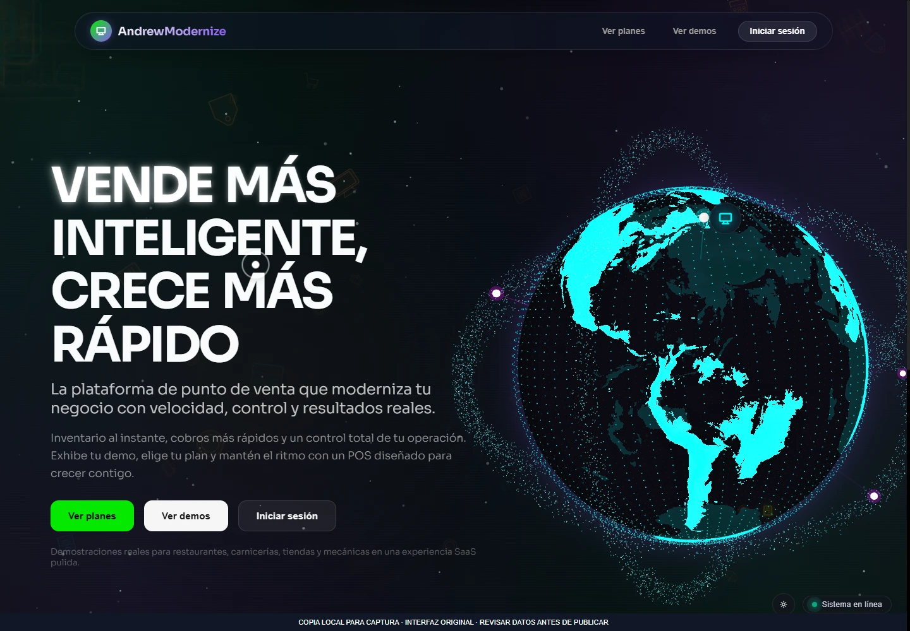
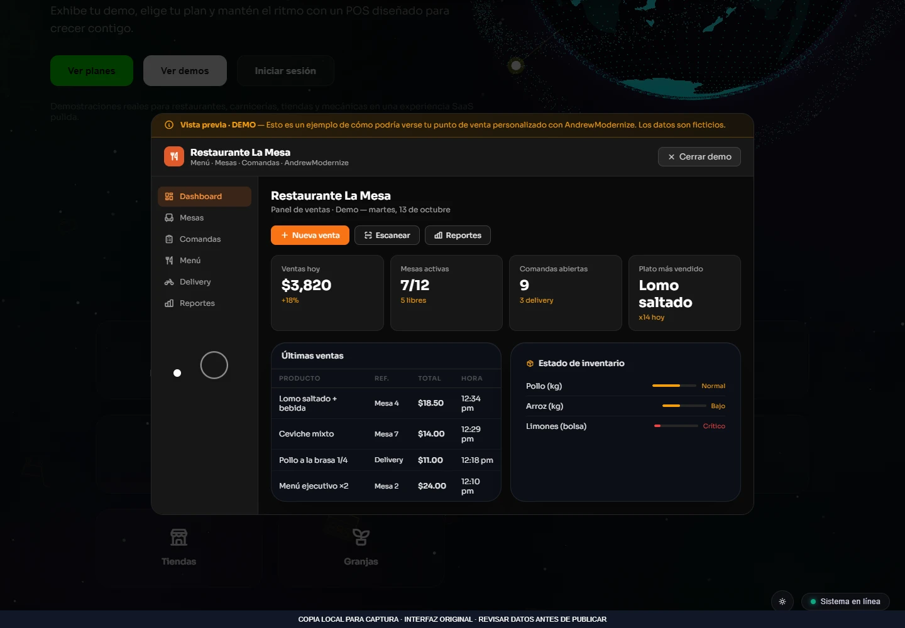
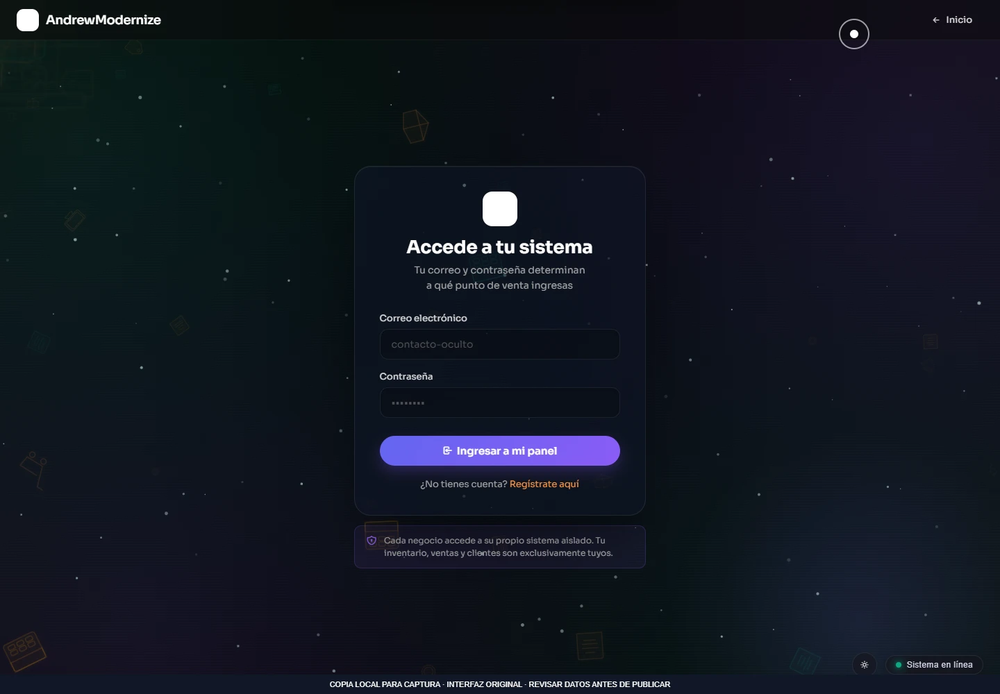

Sistemas empresariales
TerminadoPlataforma SaaS empresarial
Plataforma web y administrador de escritorio para empresas, suscripciones y puntos de venta.
Qué resuelve
Plataforma web y administrador de escritorio para empresas, suscripciones y puntos de venta.
Funciones implementadas
- Administración de empresas y estado de suscripciones
- Carga de comprobantes y gestión de entregas
- Punto de venta de tienda con carrito, stock y recibos
- Clientes, proveedores y cuentas por cobrar
- Escaneo remoto de productos desde el móvil
VISTA DEL PROYECTO
Fotografías y capturas · 3
Selecciona una imagen para ampliarla. Usa las flechas para recorrer la galería.


Ampliar ↗

Ampliar ↗

Ampliar ↗EN LA PRÁCTICA
Venta y gestión por empresa
- 1
Ingresar a una empresa y consultar su punto de venta.
- 2
Seleccionar productos y revisar cantidades y existencias.
- 3
Registrar la operación y consultar el historial y las cuentas por cobrar.
Las suscripciones y la persistencia dependen de Supabase. El ejemplo de tienda usa únicamente datos ficticios.
Probar ejemplo de uso ↗Añadir fotos a este proyecto ↗
Abre primero el gestor local con python tools/manage_media.py.